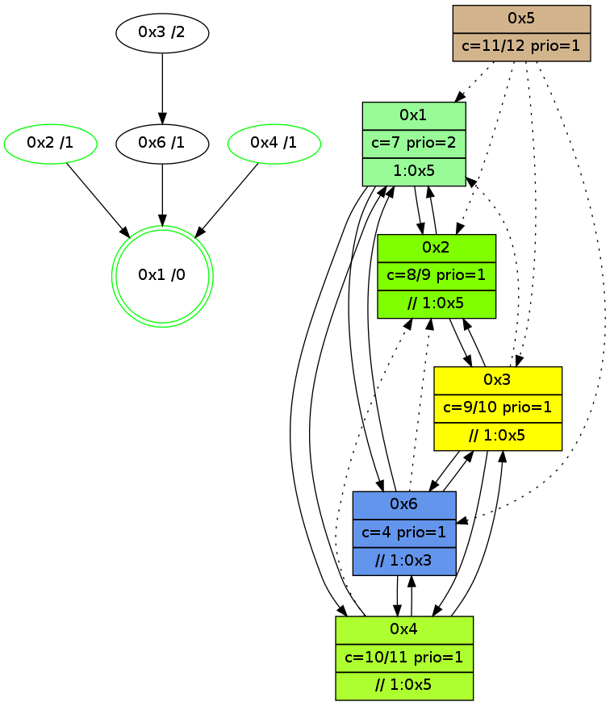

>> << IDX [start] -100 -25 -5 +0 +5 +25 +100 [925.313007116]
 Previous packets
----------------------------------------------------------------------
920.391926 beacon01(adaf) #0 coord=01,02,05,03,04,06 cycle=432.0ms assoc
-- color-indic=1 64 91 31
920.401887 beacon02(adaf) #0 coord=01,02,05,03,04,06 cycle=432.0ms assoc 64 c0 ce
920.411887 beacon05(adaf) #0 coord=01,02,05,03,04,06 cycle=432.0ms assoc 64 66 e4
920.421887 beacon03(adaf) #0 coord=01,02,05,03,04,06 cycle=432.0ms assoc 64 fa c0
920.431887 beacon04(adaf) #0 coord=01,02,05,03,04,06 cycle=432.0ms assoc 64 5c ea
920.441888 beacon06(adaf) #0 coord=01,02,05,03,04,06 cycle=432.0ms assoc 64 28 f6
920.453463 [STC(3)->6-.->1 #0.114 new-neigh,tree-change,inconsistent-stability,to-color d=2]
920.456092 [Hello(1): seq=625 sym=2,4,6 sysInfo=hasWarning,coloring-mode-on,ColoringModeRequestCalled stat=2:4,1,7,2/4:0,0,1,0/6:4,0,3,1]
920.459002 [Hello(4): seq=726 sym=1,6,3 asym=2 sysInfo=hasWarning stat=1:0,12,0,0/6:4,0,2,0/3:1,2,8,4/2:0,7,2,0]
----------------------------------------------------------------------
920.884035 beacon01(adaf) #0 coord=01,02,05,03,04,06 cycle=432.0ms assoc
-- color-indic=1 64 55 5e
920.893997 beacon02(adaf) #0 coord=01,02,05,03,04,06 cycle=432.0ms assoc 64 04 a1
920.903996 beacon05(adaf) #0 coord=01,02,05,03,04,06 cycle=432.0ms assoc 64 a2 8b
920.913997 beacon03(adaf) #0 coord=01,02,05,03,04,06 cycle=432.0ms assoc 64 3e af
920.923996 beacon04(adaf) #0 coord=01,02,05,03,04,06 cycle=432.0ms assoc 64 98 85
920.933997 beacon06(adaf) #0 coord=01,02,05,03,04,06 cycle=432.0ms assoc 64 ec 99
920.945756 [Hello(3): seq=724 sym=6,4 asym=1 sysInfo=hasWarning stat=6:6,11,12,2/4:2,3,2,0/1:3,1,8,1]
920.950091 [Color(2) seq=124 @0:0 color=8/9 prio=1 >>1.@5 c=4,7,9;0,1,2,5,6,a]
920.956681 [Color(1) seq=152 @0:0 color=7 prio=2 >1.@5 c=1,4,6,8,9;0,2,3,5,a]
----------------------------------------------------------------------
921.376143 beacon01(adaf) #0 coord=01,02,05,03,04,06 cycle=432.0ms assoc
-- color-indic=1 64 18 59
921.386104 beacon02(adaf) #0 coord=01,02,05,03,04,06 cycle=432.0ms assoc 64 49 a6
921.396103 beacon05(adaf) #0 coord=01,02,05,03,04,06 cycle=432.0ms assoc 64 ef 8c
921.406105 beacon03(adaf) #0 coord=01,02,05,03,04,06 cycle=432.0ms assoc 64 73 a8
921.416104 beacon04(adaf) #0 coord=01,02,05,03,04,06 cycle=432.0ms assoc 64 d5 82
921.426105 beacon06(adaf) #0 coord=01,02,05,03,04,06 cycle=432.0ms assoc 64 a1 9e
921.437794 [Hello(4): seq=727 sym=1,6,3 sysInfo=hasWarning stat=1:0,13,0,0/6:4,0,2,0/3:1,2,8,4]
921.443309 [Hello(1): seq=626 sym=2,6 sysInfo=hasWarning,coloring-mode-on,ColoringModeRequestCalled stat=2:5,1,7,2/6:4,0,3,1]
----------------------------------------------------------------------
921.868251 beacon01(adaf) #0 coord=01,02,05,03,04,06 cycle=432.0ms assoc
-- color-indic=1 64 dc 36
921.878213 beacon02(adaf) #0 coord=01,02,05,03,04,06 cycle=432.0ms assoc 64 8d c9
921.888212 beacon05(adaf) #0 coord=01,02,05,03,04,06 cycle=432.0ms assoc 64 2b e3
921.898212 beacon03(adaf) #0 coord=01,02,05,03,04,06 cycle=432.0ms assoc 64 b7 c7
921.908213 beacon04(adaf) #0 coord=01,02,05,03,04,06 cycle=432.0ms assoc 64 11 ed
921.918214 beacon06(adaf) #0 coord=01,02,05,03,04,06 cycle=432.0ms assoc 64 65 f1
921.929920 [Hello(3): seq=725 sym=6,4 asym=1 sysInfo=hasWarning stat=6:6,11,12,2/4:3,3,2,0/1:4,2,8,1]
921.934309 [Color(2) seq=125 @0:0 color=8/9 prio=1 >>1.@5 c=4,7,9;0,1,2,5,6,a]
921.936489 [STC(1) #0.115 new-neigh,tree-change,inconsistent-stability,stable,to-color d=0]
921.940371 [Color(1) seq=153 @0:0 color=7 prio=2 >1.@5 c=1,4,6,8,9;0,2,3,5,a]
----------------------------------------------------------------------
922.360361 beacon01(adaf) #0 coord=01,02,05,03,04,06 cycle=432.0ms assoc
-- color-indic=1 64 90 86
922.370322 beacon02(adaf) #0 coord=01,02,05,03,04,06 cycle=432.0ms assoc 64 c1 79
922.380322 beacon05(adaf) #0 coord=01,02,05,03,04,06 cycle=432.0ms assoc 64 67 53
922.390322 beacon03(adaf) #0 coord=01,02,05,03,04,06 cycle=432.0ms assoc 64 fb 77
922.400322 beacon04(adaf) #0 coord=01,02,05,03,04,06 cycle=432.0ms assoc 64 5d 5d
922.410323 beacon06(adaf) #0 coord=01,02,05,03,04,06 cycle=432.0ms assoc 64 29 41
922.421774 [Hello(1): seq=627 sym=2,6 sysInfo=hasWarning,coloring-mode-on,ColoringModeRequestCalled stat=2:5,1,7,2/6:5,0,3,1]
922.425519 [STC(6)->1 #0.115 new-neigh,tree-change,inconsistent-stability,to-color d=1]
922.427618 [Hello(4): seq=728 sym=1,6,3 sysInfo=hasWarning stat=1:1,14,1,0/6:4,0,2,0/3:2,2,8,4]
922.430652 [STC(4)->1 #0.115 new-neigh,tree-change,inconsistent-stability,to-color d=1]
922.437240 [Hello(2): seq=1216 sym=1,3 sysInfo=hasWarning stat=1:6,3,10,0/3:3,7,10,2]
922.439818 [STC(2)->1 #0.115 new-neigh,tree-change,inconsistent-stability,stable,to-color d=1]
----------------------------------------------------------------------
922.852468 beacon01(adaf) #0 coord=01,02,05,03,04,06 cycle=432.0ms assoc
-- color-indic=1 64 54 e9
922.862432 beacon02(adaf) #0 coord=01,02,05,03,04,06 cycle=432.0ms assoc 64 05 16
922.872429 beacon05(adaf) #0 coord=01,02,05,03,04,06 cycle=432.0ms assoc 64 a3 3c
922.882430 beacon03(adaf) #0 coord=01,02,05,03,04,06 cycle=432.0ms assoc 64 3f 18
922.892429 beacon04(adaf) #0 coord=01,02,05,03,04,06 cycle=432.0ms assoc 64 99 32
922.902430 beacon06(adaf) #0 coord=01,02,05,03,04,06 cycle=432.0ms assoc 64 ed 2e
922.914160 [Hello(6): seq=641 sym=4,1,3 asym=2 sysInfo=hasWarning stat=4:0,0,1,0/1:6,5,14,1/3:1,4,7,1/2:2,2,6,1]
922.918033 [Hello(3): seq=726 sym=6,4,2 asym=1 sysInfo=hasWarning stat=6:6,11,13,2/4:4,3,3,0/2:0,0,1,0/1:5,3,9,1]
922.920262 [Color(2) seq=126 @0:0 color=8/9 prio=1 >>1.@5 c=4,7,9;0,1,2,5,6,a]
922.921885 [STC(3)->6-.->1 #0.115 new-neigh,tree-change,inconsistent-stability,to-color d=2]
922.925416 [Color(1) seq=154 @0:0 color=7 prio=2 >1.@5 c=1,4,6,8,9;0,2,3,5,a]
----------------------------------------------------------------------
923.344576 beacon01(adaf) #0 coord=01,02,05,03,04,06 cycle=432.0ms assoc
-- color-indic=1 64 2c 44
923.354537 beacon02(adaf) #0 coord=01,02,05,03,04,06 cycle=432.0ms assoc 64 7d bb
923.364537 beacon05(adaf) #0 coord=01,02,05,03,04,06 cycle=432.0ms assoc 64 db 91
923.374537 beacon03(adaf) #0 coord=01,02,05,03,04,06 cycle=432.0ms assoc 64 47 b5
923.384538 beacon04(adaf) #0 coord=01,02,05,03,04,06 cycle=432.0ms assoc 64 e1 9f
923.394539 beacon06(adaf) #0 coord=01,02,05,03,04,06 cycle=432.0ms assoc 64 95 83
923.405409 [Hello(1): seq=628 sym=2,4,6 sysInfo=hasWarning,coloring-mode-on,ColoringModeRequestCalled stat=2:6,1,8,2/4:0,0,1,0/6:5,0,4,1]
923.409889 [Hello(4): seq=729 sym=1,6,3 asym=2 sysInfo=hasWarning stat=1:1,15,1,0/6:5,0,2,0/3:3,2,9,4/2:0,1,1,0]
----------------------------------------------------------------------
923.836684 beacon01(adaf) #0 coord=01,02,05,03,04,06 cycle=432.0ms assoc
-- color-indic=1 64 e8 2b
923.846645 beacon02(adaf) #0 coord=01,02,05,03,04,06 cycle=432.0ms assoc 64 b9 d4
923.856644 beacon05(adaf) #0 coord=01,02,05,03,04,06 cycle=432.0ms assoc 64 1f fe
923.866645 beacon03(adaf) #0 coord=01,02,05,03,04,06 cycle=432.0ms assoc 64 83 da
923.876645 beacon04(adaf) #0 coord=01,02,05,03,04,06 cycle=432.0ms assoc 64 25 f0
923.886647 beacon06(adaf) #0 coord=01,02,05,03,04,06 cycle=432.0ms assoc 64 51 ec
923.898383 [Hello(3): seq=727 sym=6,4,2 asym=1 sysInfo=hasWarning stat=6:6,11,13,2/4:5,3,3,0/2:0,0,1,0/1:6,4,9,1]
923.902743 [Color(2) seq=127 @0:0 color=8/9 prio=1 >>1.@5 c=4,7,9;0,1,2,5,6,a]
923.905374 [Color(1) seq=155 @0:0 color=7 prio=2 >1.@5 c=1,4,6,8,9;0,2,3,5,a]
----------------------------------------------------------------------
924.328791 beacon01(adaf) #0 coord=01,02,05,03,04,06 cycle=432.0ms assoc
-- color-indic=1 64 a4 9b
924.338753 beacon02(adaf) #0 coord=01,02,05,03,04,06 cycle=432.0ms assoc 64 f5 64
924.348751 beacon05(adaf) #0 coord=01,02,05,03,04,06 cycle=432.0ms assoc 64 53 4e
924.358753 beacon03(adaf) #0 coord=01,02,05,03,04,06 cycle=432.0ms assoc 64 cf 6a
924.368752 beacon04(adaf) #0 coord=01,02,05,03,04,06 cycle=432.0ms assoc 64 69 40
924.378753 beacon06(adaf) #0 coord=01,02,05,03,04,06 cycle=432.0ms assoc 64 1d 5c
924.390462 [Hello(4): seq=730 sym=1,6,3 asym=2 sysInfo=hasWarning stat=1:1,0,1,0/6:5,0,2,0/3:4,2,9,4/2:0,1,1,0]
924.396735 [Hello(1): seq=629 sym=2,4,6 sysInfo=hasWarning,coloring-mode-on,ColoringModeRequestCalled stat=2:7,1,8,2/4:0,0,1,0/6:5,0,4,1]
924.399092 [STC(1) #0.116 new-neigh,tree-change,inconsistent-stability,stable,to-color d=0]
----------------------------------------------------------------------
924.820898 beacon01(adaf) #0 coord=01,02,05,03,04,06 cycle=432.0ms assoc
-- color-indic=1 64 60 f4
924.830859 beacon02(adaf) #0 coord=01,02,05,03,04,06 cycle=432.0ms assoc 64 31 0b
924.840859 beacon05(adaf) #0 coord=01,02,05,03,04,06 cycle=432.0ms assoc 64 97 21
924.850860 beacon03(adaf) #0 coord=01,02,05,03,04,06 cycle=432.0ms assoc 64 0b 05
924.860861 beacon04(adaf) #0 coord=01,02,05,03,04,06 cycle=432.0ms assoc 64 ad 2f
924.870862 beacon06(adaf) #0 coord=01,02,05,03,04,06 cycle=432.0ms assoc 64 d9 33
924.882571 [Hello(3): seq=728 sym=6,4,2 asym=1 sysInfo=hasWarning stat=6:6,11,13,2/4:6,3,3,0/2:0,0,1,0/1:7,5,10,1]
924.885307 [STC(2)->1 #0.116 new-neigh,tree-change,inconsistent-stability,stable,to-color d=1]
924.886441 [Color(5) seq=63 @0:0 color=11/12 prio=1 c=8;4,7,9]
924.888110 [STC(4)->1 #0.116 new-neigh,tree-change,inconsistent-stability,stable,to-color d=1]
924.890694 [TreeStatus(4)-.->1 #0.116 new-neigh,tree-change,inconsistent-stability,stable child=1]
924.894824 [Color(1) seq=156 @0:0 color=7 prio=2 >1.@5 c=1,4,6,8,9;0,2,3,5,a]
924.897738 [Hello(6): seq=643 sym=4,1,3 asym=2 sysInfo=hasWarning stat=4:0,0,1,0/1:8,7,15,1/3:2,4,8,1/2:4,3,6,1]
924.900620 [STC(6)->1 #0.116 new-neigh,tree-change,inconsistent-stability,to-color d=1]